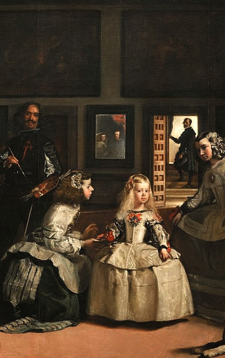
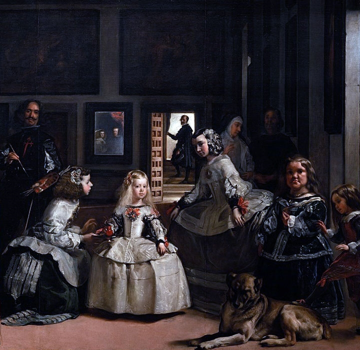

PICTURE EXPLORE
Las Meninas is a 1656 painting by Diego Velázquez, the leading
artist of the Spanish Golden Age.
It was cleaned in 1984 to remove a "yellow veil" of dust that had
gathered since the previous restoration in the 19th century.
The cleaning provoked furious protests, not because the picture had
been damaged in any way, bit because it looked different

